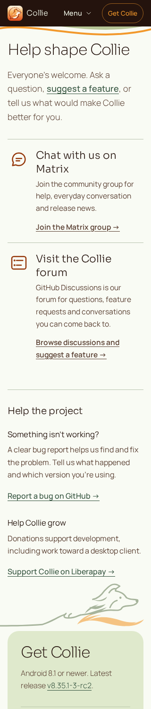
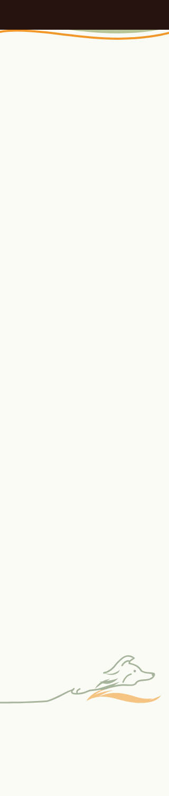
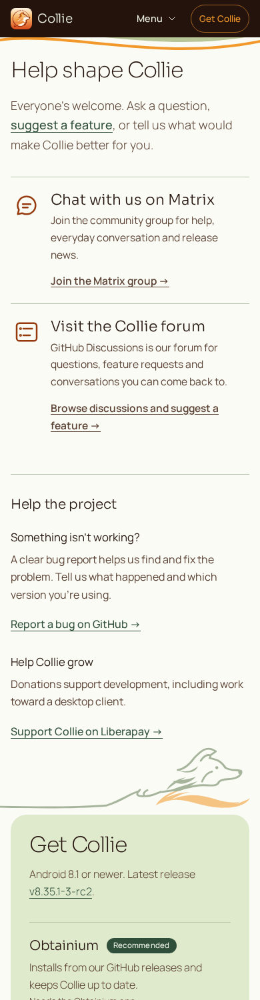
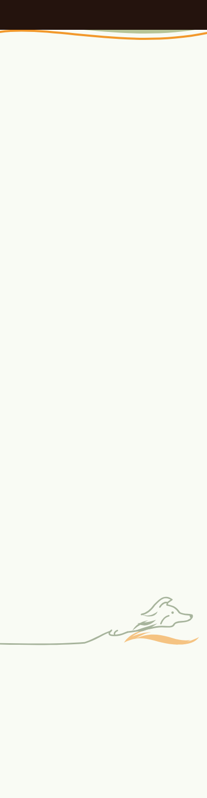
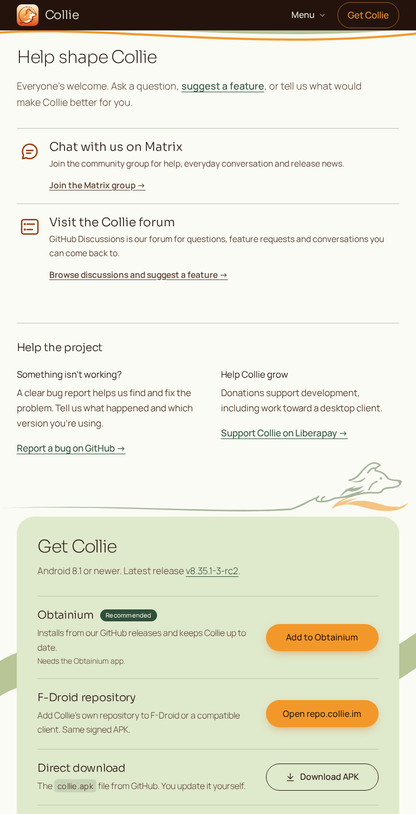
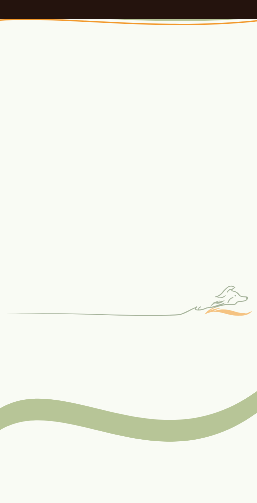
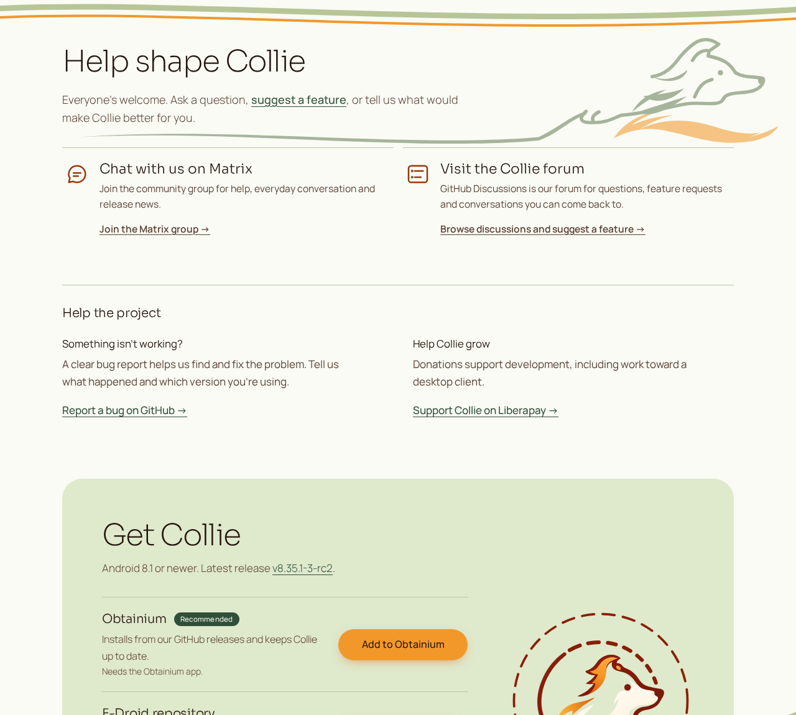
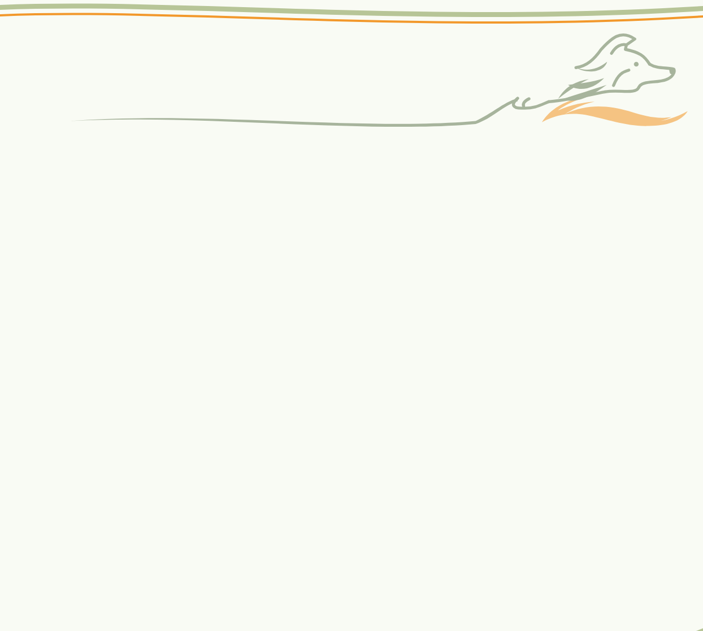

Same page and positions. Essential face, neck and forepaw now occupy measured empty space. Click any image for native-size inspection.
Exact-source browser renders using the original fonts/assets; no foreground rearrangement. These are production recompositions of the preserved full drawing, not claims that its hidden reference pixels were measurable.